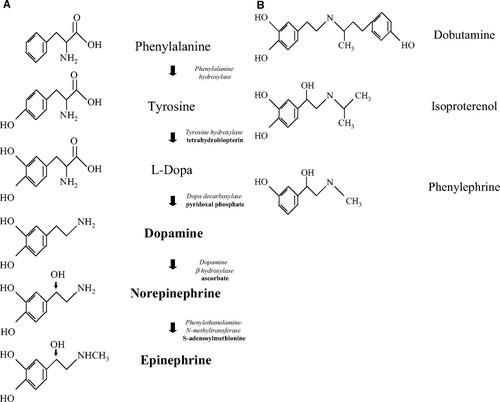

Inotropes
Background
Indications
Intotropes are indicated for patients with LV systolic dysfunction, low CO, and low SBP (e.g. < 90 mmHg) resulting in end organ hypoperfusion (i.e. cardiogenic shock). - Short term hemodynamic support - Bridge therapy to MCS/ECLS/Transplant - Limited use in long-term hemodynamic support
Caution
Inotropes can cause sinus tachycardia, increase RVR in AF (increased AVN conduction), induce myocardial ischemia and arrythmias, and increase mortality.
Inotropic Agents
| Agent | Class | MOA | Dosing | Notes |
|---|---|---|---|---|
| Dobutamine | Beta agonist (synthetic) | B1/B2 agonist. Variable A1 activity. | 2-20 mcg/kg/min | |
| Dopamine | Beta agonist (endogenous) | Dose-dependent delta->beta->alpha affects. Introtropy, arteriovenous constriction. | ||
| Isoproterenol | Nonselective beta agonist | Beta 1/2 agonism. | 2-10 mcg/min | Used for bradyarrhythmias (especially TdP), Brugade syndrome |
| Milrinone | PDE inhibitor | PDE-3 inhibitor, decreases cAMP degradation distally to beta receptor. Increases Ca++ influx to cell. Vasodilation via vascular PDE inhibition. | 0.375–0.75 mcg/kg/min | |
| Levosimendan | Ca-sensitizing agent | Increases myocardial contraction with Ca++. PDE-3 inhibition. |
Specific Use Cases
| Setting | Guidance |
|---|---|
| Hypotension | Dobutamine preferred over PDE-3 inhibitors or Ca-sensitizing agents due to less vasodilatory effects. |
| Renal insufficiency | Dobutamine preferred to milrinone. Dose adjustment necessary with milrinone. |
| Recent beta-blockade | PDE-3 inhibitor preferred due to different MOA. Alternatively, use high-dose dobutamine. |
| AFRVR | Avoid dobutamine and dopamine if possible. |
Dobutamine
Dobutamine is a synthetic catecholamine that acts as a β1- and β2-receptor agonist.
- binds β1:β2 at a 3:1 ratio, therefore is a potent inotrope with weaker chronotropic effect
- vascular smooth muscle binding and β2 stimulation lead to mild vasodilation, particularly at lower doses (<5 mcg/kg/min). This effect is ameliorated at higher doses where vasoconstriction dominates
- increases myocardial oxygen consumption significantly despite its mild chronic effects at low-medium doses. "Exercise-mimicking effect" makes it also useful for diagnostic cardiac perfusion imaging.
- risk of malignant ventricular arrhythmias can be observed at any dose
- rare risk of hypersensitivity myocarditis (eosinophilic) in 2-20% of patients. Dose-dependent risk.
Milrinone
Milrinone is a phosphodiesterase 3 inhibitor that increases cardiac inotropy, lusitropy, and peripheral vasodilatation. Preference is often given to using milrinone in patients with severe pulmonary hypertension because of a purported mechanism of reducing pulmonary-artery pressures and improving right ventricular function.
- Causes hypotension - avoid a loading dose.
- Avoid in CAD given negative outcomes in OPTIME-HF trial.
- Most beneficial in nonischemic CM.
- Potentially negative mortality benefit compared to nitroglycerin/nesiritide.
Isoproterenol
Isoproterenol is a potent, nonselective, synthetic β-adrenergic agonist with very low affinity for α-adrenergic receptors.
- powerful chronotropic and inotropic properties
- potent systemic and mild pulmonary vasodilatory effects
- stimulatory impact on stroke volume is counterbalanced by a β2-mediated drop in SVR, which results in a net neutral impact on CO.
Dopamine
Dopamine, an endogenous central neurotransmitter, is the immediate precursor to norepinephrine in the catecholamine synthetic pathway.
- Pharmacokinetics: Half-life 2-3 minutes, metabilized by MAO and COMT.
- MOA: 1) D1/2 receptor agonism at lowest doses (0.5-2 mcg/kg/min) which causes vasodilation in coronary, renal, mesenteric, and cerebral beds. Also causes natriuresis via renal tubular action. 2) Predominantly weak beta-1 agonism at low doses (2-10 mcg/kg/min) which promotes norepinephrine release. 3) Increasing alpha1-mediated vasoconstriction as dose escalates (>10 mcg/kg/min).
- Dosing: 1) 1-5 mcg/kg/min IV (low dose) "renal dosing" 2) 5-15 mcg/kg/min IV (medium dose) "inotrope" 3) 20-50 mcg/kg/min IV (high dose) "vasopressor"
- Caution: arrhythmogenic at the highest doses. Increases myocardial oxygen demands. No evidence for any renoprotective effects.

Levosimendan
Not routinely available in Canada or the USA.
Evidence Base
DOREMI (NEJM 2021)
Milrinone as Compared with Dobutamine in the Treatment of Cardiogenic Shock | NEJM
- Question: Is milrinone safer or more effective than dobutamine in the treatment of cardiogenic shock?
- Design: Single-centre blinded, 1:1 randomized and controlled, superiority trial
- Population: Consecutive adult patients admitted to the Ottawa CCU with cardiogenic shock (SCAI Stage B, C, D, E).
- Intervention: Milrinone (blinded)
- Comparator: Dobutamine (blinded)
- Outcomes:
- Primary: Composite of in-hospital mortality, resuscitated IHCA, cardiac transplant or MCS, nonfatal MI, TIA/stroke, RRT
- Results:
- N=192. Primary outcome: 49% vs 54% (RR 0.90, P=0.47). No difference in subgroups, time-to-event analysis
- Secondary outcomes: No differences in sub-primaries, CCU LOS, hospital LOS, NIV, invasive ventilation, AKI, biochemistry, arrhythmias, dose of other Vasopressors.
- Takeaway:
- No significant advantage of milrinone over dobutamine. Trend towards slightly reduced primary outcome. No differences in safety profile
- Underpowered study with some bias, and cannot rule out milrinone being better. For now, use either one -- whichever you are more comfortable with.
References
- Inotropes and Vasopressors | Circulation
- Use of vasopressors and inotropes - UpToDate
- Current use of inotropes in circulatory shock | Annals of Intensive Care | Full Text
- A pragmatic approach to the use of inotropes for the management of acute and advanced heart failure: An expert panel consensus - ScienceDirect
- Inotropes in Acute Heart Failure: From Guidelines to Practical Use: Therapeutic Options and Clinical Practice | CFR Journal
- Inotropic agents in heart failure with reduced ejection fraction - UpToDate
- Comparative pharmacology of inotropes and vasopressors | Deranged Physiology